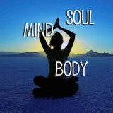
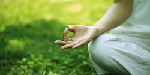

Holistic Health Programmes |
|
The basic under lying principle of the experience available at the Center would be one of integrating the environment, body, mind, and soul through heightened levels of awareness, knowledge and experience. The ultimategoal is to experience the natural state of dynamic, harmonious balance which is the definition of health according to the ancient wisdom.
|
|
Reducing stress and enlivening creativity through meditation and creative visualizations

Learning your unique mind body constitutional nature
Identifying and releasing self-defeating emotional patterns

Enhancing your physical and emotional flexibility through yoga and exercise
Optimizing your nutritional state through individualized diet and appropriate herbs & spices
Using your five senses to create balance and enjoyment
Eliminating toxic influences from your body and mind
|